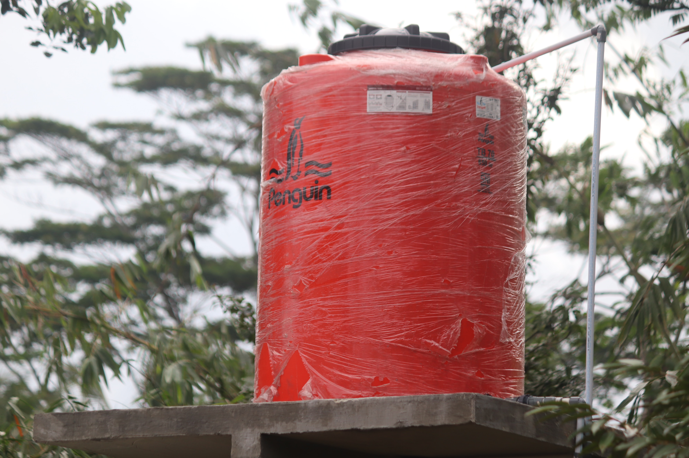

Project Showcase

Datadive
Our group spearheaded the development of an innovative Data Mining Website designed to streamline the analysis of diverse datasets. The platform seamlessly processes user-uploaded data sheets, offering a comprehensive suite of functionalities tailored to meet specific user requirements.

Automatic water level Controller
Led the development of an automated Water Level Controller system, addressing the critical need for efficient water resource management. The project aimed to optimize water usage in various applications, such as agricultural irrigation or domestic water tanks, by automatically monitoring and controlling water levels.